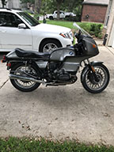
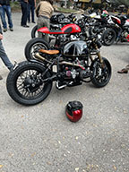
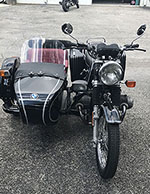
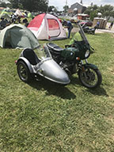

| Back to the basics. This is timing, engine compression, fuel cell maintenance, and carb tuning. This is just a good old fashioned tune up. |
|
Engine electrical is where you will be spending a lot of time if you own an old airhead. It is kind of a pain, but old bikes come with old, crusty wiring. It just has to be done. |
 |
| Engine rebuild time! Can you smell the excitement? This is a basic engine top end teardown and rebuild. I've done this and it wasn't too bad, but you have to pay attention to valve lash! |
|
This is a final drive assembly repair and reseal. The final drive is very important if you are looking into buying an old airhead, especially if it was kept outside. This video should be used with your repair manual. |
 |
| This is also a final drive video, this one is removal. It is very important to be careful as the final drive has pinion gears that are expensive and hard to handle. |

|
This video is a basic tutorial on rebuilding carburetors. This is a must for anyone who owns or wants to own one of these bikes. I have done this soooo many times. Good training. |
 |